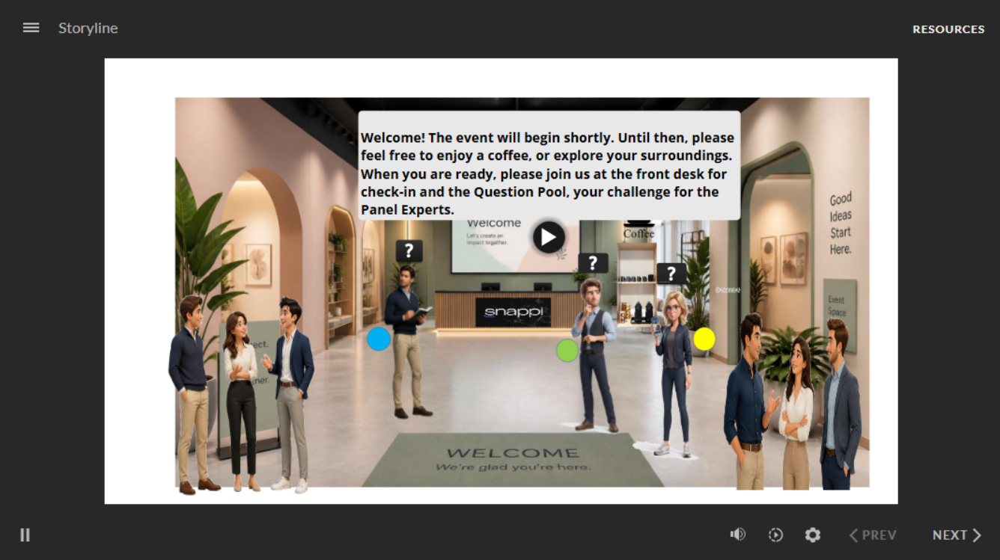
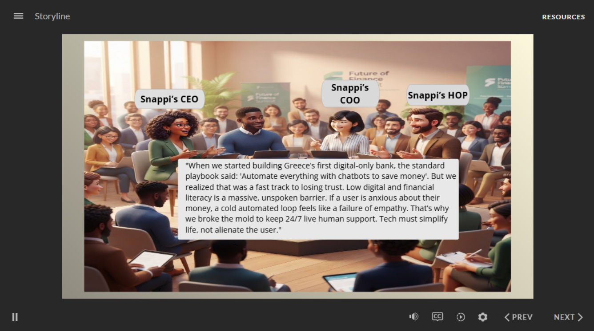
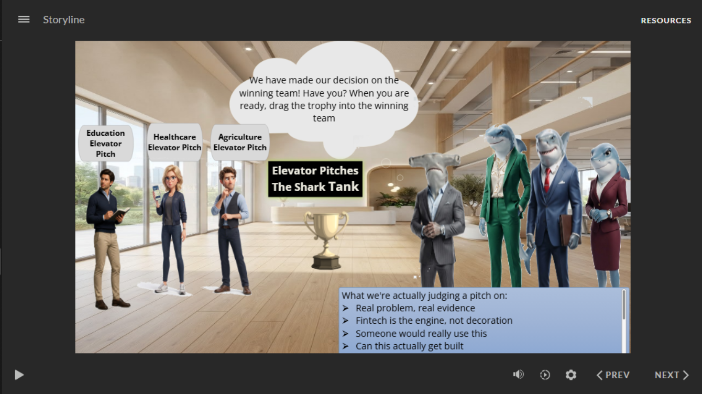
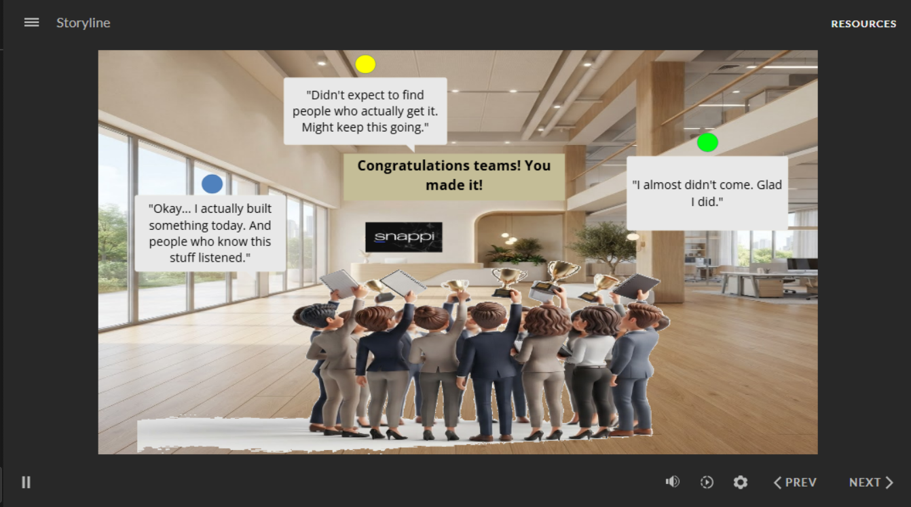

Snappi & FinTech Learning Ecosystem
A blended learning ecosystem for Entrepreneurship Talks and Snappi Bank: a live, facilitator-led FinTech and startups event for 40 young adults, extended into an Articulate Storyline simulation and a post-event AI reflection coach.
Project snapshot
Introducing FinTech and entrepreneurship to a skeptical, pragmatic audience
Entrepreneurship Talks' mission is to promote entrepreneurship among young adults. This event was designed to support that mission directly: introducing participants to entrepreneurial thinking and to how FinTech is reshaping finance and business, in partnership with Snappi Bank.
The performance gap driving the brief was specific — many young adults are interested in entrepreneurship but lack exposure to authentic startup experiences, practical FinTech knowledge, and the confidence to engage with founders and industry professionals. The event needed to close that gap in a single 2–3 hour session, for a mixed audience with no assumed prior knowledge, where a panel-heavy format risked dominating the room and leaving little time for practice.
The brief also named the constraints plainly: limited time, a mixed-knowledge audience, a single session with no follow-up built in unless designed for, and the risk that participation would be uneven — particularly around networking, which is often the hardest part of an event like this for less confident participants.
Who was in the room
The audience was 18–28 year olds with genuinely mixed motivations — some already interested in entrepreneurship, others simply curious about innovation, career options, or technology. The brief characterized this cohort (Gen Z and the youngest millennials) as highly pragmatic, skeptical of traditional financial institutions, and carrying a high tolerance test for anything that sounded corporate or scripted. They were described as valuing vulnerability and messy startup stories over polish, focused on financial literacy, and inclined to see FinTech as survival infrastructure — crowdfunding, micro-loans, borderless neobanks — rather than as a trend.
Three color-coded personas ran through the design, from the live event's team formation through into the Storyline simulation's persona-lensed screens: the Aspiring Entrepreneur, motivated to develop and eventually launch ideas; the Curious Individual, interested in entrepreneurship without immediate plans to start a business; and the Tech Enthusiast, drawn to the innovation and FinTech angle specifically. Confidence and networking comfort varied across these personas — the Aspiring Entrepreneur, for example, was mapped as having lower networking confidence, which shaped how that persona's moments were written in the simulation.
The instructional implications were direct: content needed to earn credibility through authenticity rather than authority, activities needed to build confidence through low-stakes practice before higher-stakes moments like pitching, and anonymity or structure needed to lower the exposure risk for less confident participants without diluting participation.
From design principles to a four-phase journey
Five design principles anchored every decision in the brief: authenticity over abstraction, participation over passive listening, reflection to strengthen transfer, networking treated as part of the learning (not an add-on), and confidence built through practice rather than told to participants.
The learning journey was mapped across four phases in the Experience Blueprint — arrival and orientation, hands-on practice, cross-team exchange and reflection, and extended networking — each phase tied to a specific learning outcome, a shift in the learner's psychological state, and observable evidence of success rather than a vague sense that "it went well."
Instructional theory was applied selectively rather than layered on for its own sake. Andragogy shaped the emphasis on early relevance, autonomy, and treating participants as bringing their own expertise into the room. Gagné's Nine Events structured the sequence within each phase — from gaining attention and activating prior knowledge through to eliciting performance and enhancing retention and transfer. Kolb's Experiential Learning Cycle shaped the phase-by-phase progression itself: concrete experience in the panel, active experimentation in the Startup Game, reflective observation in the World Café, and — by design — the retention-and-transfer stage was deliberately split across two separate mechanisms (the in-event Homecoming reflection, and the post-event Silo-Buster Digital Directory), rather than compressed into one moment.
The Question Pool's anonymous, color-coded submission process was a specific rationale-driven choice: it democratized the room, primed active listening before the panel even began, and gave the design a live data point (submission and engagement rate) — while lowering the exposure risk for shyer participants who might not otherwise raise a hand.
Part A · The live event
The event ran as four phases, each built around a specific instructional purpose rather than simply a schedule of activities.
Phase 1 — Arrival & the expert panel
Belonging before content
Participants arrived to an anonymous Question Pool rather than a lecture. The expert panel that followed was deliberately built around authentic, unscripted storytelling — a "How–Why–What's Next" structure — rather than a polished presentation, on the reasoning that this audience's high skepticism responds to vulnerability, not authority. Questions submitted to the pool were surfaced back to the panel live, closing the loop so participation had a visible consequence rather than being symbolic.
Phase 2 — The Startup Game
Active experimentation
Cross-persona teams (blue, green, yellow) formed before any performance was required, building psychological safety ahead of the harder moments. Teams then applied a FinTech concept to a real-world sector problem, received real-time expert coaching modeled on workplace feedback, and delivered time-boxed elevator pitches evaluated by an expert panel — with a visible reward acting as an extrinsic motivator layered on top of the intrinsic learning already happening.
Phase 3 — World Café & Homecoming
Reflection through exchange
An Ambassador from each team migrated to a different table to exchange ideas — surfacing variation and challenge that participants couldn't have generated inside their own team alone — before returning home to synthesize what they'd heard. This phase closes Kolb's cycle: reflection into conceptualization.
Phase 4 — Silo-Buster Directory & informal networking
Extending the connection beyond the room
A digital directory addressed a networking gap the Learner Journey Map had surfaced directly, giving participants a concrete channel to continue a professional connection after the event ends, followed by unstructured networking time without facilitation pressure.
Gamification in the Startup Game and Shark Feedback moments wasn't decoration — the rationale was that it drives low-friction collaboration, lets participants lead with their strengths through role-play, and flips the usual power structure between "expert" and "participant" long enough to make behavior observable to facilitators.
Part B · The digital simulation
Rather than attempting to reproduce the entire live event, four transformational moments were selected for adaptation into Articulate Storyline: the Panel, the Startup Game, the World Café, and the Silo-Buster Digital Directory. Each moment was mapped against the same five frameworks used in the live design — Andragogy, Gagné's Events, Bloom's Taxonomy, Kolb's stages, and a modified Kirkpatrick model — so the simulation stayed instructionally consistent with the event rather than becoming a separate product with its own logic.
The transformation filter
Every live activity was tested against one question: does this activity's value come from its content, or from live human presence and unpredictability? Content-driven activities translated into Storyline largely as-is. Presence-driven activities were adapted — rebuilt around branching, click-to-reveal, and drag-and-drop mechanics that preserved the instructional intent without pretending to replicate live spontaneity. A small number were excluded entirely where no digital equivalent could carry the original's meaning.
| Live activity | Verdict | Storyline equivalent |
|---|---|---|
| Authentic storytelling (panel) | As-is | Avatar dialogue in a large-room scene, audio-narrated where feasible |
| Live Q&A with experts | Adapted | Learner selects a question from the pool; avatar delivers a pre-scripted response |
| Team building | Adapted | Learner's role reframed from "team member" to "team assigner" — a directorial role achievable in Storyline |
| Elevator pitch, Shark Tank & reward | Adapted | Learner evaluates pitches against expert-revealed criteria and picks a winner, pushing the interaction into Bloom's "Evaluate" level rather than passive viewing |
| The notebook (physical deliverable) | Excluded | — its value came from being a single object carried across all three live phases; no digital equivalent preserved that continuity |
| Closing ritual | Adapted | Illustrated closing scene with persona-specific completion messages, preserving the symbolic function of visible, collective completion |
The Elevator Pitch screen was deliberately built so the learner forms their own judgment before seeing the experts' criteria, rather than being told the answer outright — combining the credibility of expert judgment with genuine learner agency, and asking more of the learner than passive observation would.
From the build




Extending beyond the simulation
The learning ecosystem doesn't end when the Storyline simulation closes. An AI Reflection Coach was designed as a further, intentionally separate extension — positioned after the event rather than during it, to support participants as they begin applying what they learned in real entrepreneurial situations. Its design rationale, conversational architecture, and behavioral principles are documented in full as a separate case study.
Positioning AI support after the event, rather than folding it into the live day, was intentional: entrepreneurial learning consolidates through reflection and application, not just through instruction, so the coach was built to meet participants at the point where they start using what they learned — not before.
What changed between the live design and the build
Documenting the transformation filter surfaced trade-offs that a straightforward "convert the event to e-learning" brief would have missed. Two examples stand out:
Team formation could not be replicated as originally designed, since live team formation depends on physical presence, body language, and organic social bonding that Storyline can't simulate. Rather than approximating that with a false sense of realism, the learner's role was reframed entirely — from a team member experiencing formation to a team assigner directing it — which fit an achievable Storyline mechanic without pretending to be something it wasn't.
The Elevator Pitch and Shark Tank moment could have been built as a simple pass/fail reveal. Instead, it was restructured so the learner forms an independent judgment first — selecting a winning team based on shared criteria — before finding out whether that judgment matched the experts'. This small change moved the interaction from Bloom's passive "Understand" level into "Evaluate," at the cost of slightly more build complexity.
What shipped
Representative screens from the build are shown above.
What this project demonstrates
This project demonstrates a fully reasoned, evidence-based approach to evaluation design — even though the event's actual outcome data has not yet been collected.
An evaluation framework was built into the design from the start, not added afterward: a modified Kirkpatrick model mapped each of the four levels to a specific event component and a specific data source — reaction to arrival engagement and poll participation, learning to pre- and post-session question quality, applied practice to facilitator observation during the Startup Game, and intent to transfer to self-reported next-step commitments in the closing notebook entry.
As a body of work, this project demonstrates a full instructional design cycle carried out in one connected system rather than in isolated pieces: a documented needs analysis and design brief, a learner-centred blueprint built on named theoretical rationale rather than intuition, a disciplined process for deciding what does and doesn't survive translation from a live to a digital format, and an evaluation plan tied to observable behavior rather than satisfaction alone.
What I'd carry forward
Designing this project showed me just how challenging it is to transform meaningful learning experiences into an asynchronous simulation. Every design decision had to preserve the purpose and significance of the original event while creating an experience that learners could navigate independently. Achieving that required far more thought than I had initially expected.
What surprised me most throughout the process was how many disciplines instructional design brings together and how rewarding it is to see those decisions come to life. Even the simplest slide carries meaning. Every interaction communicates something to the learner, and as designers, we are responsible for ensuring that message is intentional and worthwhile.
More than anything, this project reinforced the responsibility instructional designers have to create meaningful learning experiences. Knowing that something I designed could genuinely help someone understand a concept, think differently, or experience learning in a memorable way is far more rewarding than simply producing a polished simulation.
Choosing a single design decision to highlight is difficult because every element contributes to the overall experience. However, if I had to choose one, it would be the World Café activity. I believe that meaningful learning often begins when learners step outside their comfort zones, encounter different perspectives, and reflect on what they have experienced. That principle shaped both the live event and its digital translation.
Finally, developing the three learner personas made me realise how differently people experience the same learning environment. That process sparked an interest in learner psychology that I had not expected and has encouraged me to think more deeply about designing learning experiences that are both meaningful and responsive to individual needs.
Looking back, this project taught me that instructional design is not simply about organising content or building interactions. It is about making thoughtful decisions that respect learners, create opportunities for meaningful reflection, and ultimately make learning worth experiencing.